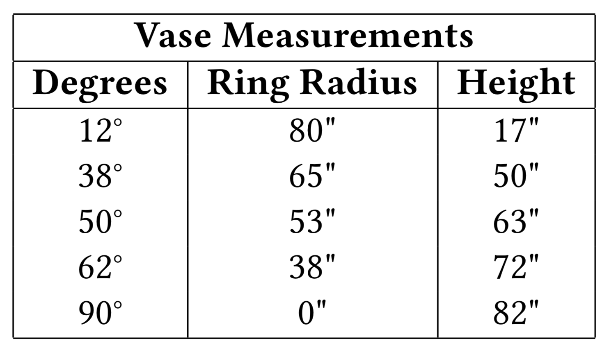
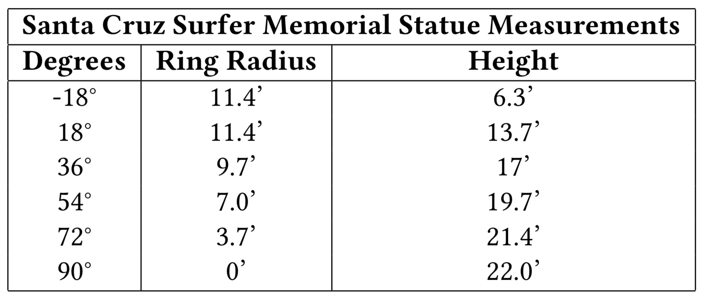

Reflectance Transformation Imaging, also known as Polynomial Texture Mapping, was originally created to create textures with self-shadowing. However, it is most widely used by the archaeological community to collect detailed information about artifacts' surfaces from the specular information. In this paper we extend the size of objects that can be captured with RTI by using a drone to hold the light. This allows users to capture reflectance information on larger objects that are even outdoors.
In setting up the RTI experiment, we followed the instructions provided with the free software by Cultural Heritage Imaging (CHI)\cite{cultural_heritage_imaging_2013}. We used two billiard 8-balls for the software to calculate the locations of the light based on the highlight reflected on the two spheres. We secured the spheres by placing them on flat rocks in the center of hair ties so that wind from the drone's propellers would not move them.
The vase measured a diagonal of 32", and the instructions recommend forming a dome around the object's face with a radius 2-3 times the length of the diagonal of the object's face. I decided to have the radius of the dome be 82". Since our drone the Phantom 4 was years old, we did not have as great programmable navigability as new drones do today. So that my drone flyer, John Fowler, could focus on simply manually keeping the drone at the correct height, I laid out a garden hose in rings around the object. This way, he could simply center the hose with the camera on the drone facing directly down and hold the drone at the correct height for that ring. I calculated the rings manually by incrementing the degrees from the bottom of the vase.

In performing the experiment outside, it brought up further challenges to deal with unexpected elements. We could only fly the drone accurately and easily in low wind conditions. We also had to fly the drone at night so that the lights would be bright enough to capture specular information on the artifact.
[1] Benjamin Hepp, Matthias Nießner, and Otmar Hilliges. Plan3d. ACM Transactions on Graphics, 38(1):1–17, 2018.
[2] Cultural Heritage Imaging. Reflectance transformation imaging: Guide to highlight image capture. 2013.
[3] Tom Malzbender, Dan Gelb, and Hans Wolters. Polynomial texture maps. Proceedings of the 28th annual conference on Computer graphics and interactive techniques - SIGGRAPH 01, 2001.
[4] James Miles, Mike Pitts, Hembo Pagi, and Graeme Earl. New applica- tions of photogrammetry and reflectance transformation imaging to an easter island statue. Antiquity, 88(340):596–605, Jan 2014.
[5] Katheryn E Piquette. Reflectance transformation imaging (rti) and ancient egyptian material culture.